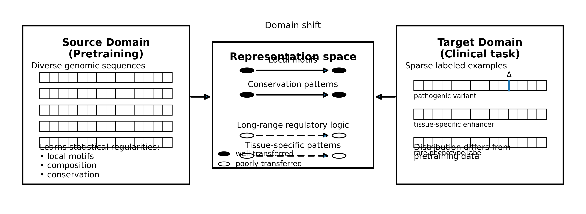
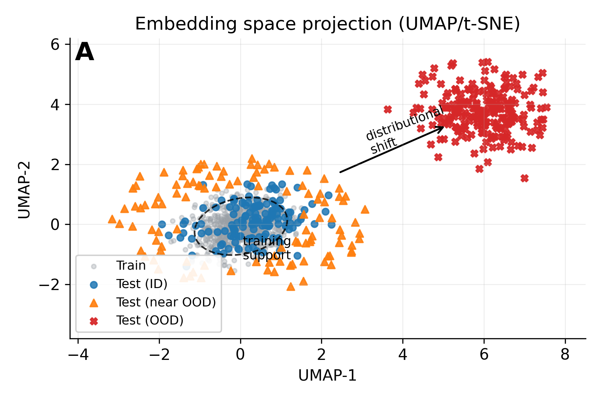

9 Transfer and Adaptation
Transfer learning fails as often as it succeeds, and the failures are silent. A protein language model trained on human sequences may confidently score variants in mouse orthologs, producing predictions that look reasonable but reflect human-specific evolutionary pressures irrelevant to mouse biology. A foundation model pretrained on coding sequences may extract features actively misleading for noncoding regulatory elements. A classifier achieving 90% accuracy on common variants may collapse to chance performance on the rare variants that matter most clinically. Nothing in the model’s outputs signals these failures. The predictions look the same whether transfer has succeeded or catastrophically failed. This asymmetry between confident outputs and actual reliability creates the central methodological challenge of applying pretrained models: detecting when transfer works and when it does not, before the predictions reach clinical applications where failures have consequences.
The promise of transfer learning is substantial. Foundation models trained on billions of evolutionary sequences learn representations that capture protein structure, functional constraints, and sequence grammar without task-specific supervision (see Chapter 8). When these representations are applied to downstream tasks with limited labeled data, they can achieve performance that would be impossible for models trained from scratch. A variant effect predictor fine-tuned from ESM-2 can classify novel missense mutations using patterns learned from the entire protein universe, not just the handful of variants with clinical annotations. This capacity to generalize from abundant unlabeled data to rare clinical scenarios has driven much of the enthusiasm for genomic foundation models.
The reality requires careful navigation. Every adaptation decision involves tradeoffs: preserving pretrained knowledge versus enabling task-specific learning, computational efficiency versus model flexibility, rapid deployment versus careful validation. Full fine-tuning updates all parameters, risking catastrophic forgetting of pretrained knowledge. Feature extraction freezes all pretrained parameters, limiting adaptation to task-specific patterns. Parameter-efficient methods (adapters, LoRA, prompt tuning) navigate between these extremes, but each makes different assumptions about where adaptation should occur.
9.1 Source and Target Domains
When a cardiologist requests variant interpretation for a patient with hypertrophic cardiomyopathy, the clinical need (classifying a specific MYH7 variant) differs fundamentally from the data available during model development (millions of protein sequences sampled across all of evolution). Bridging this gap requires understanding what properties of pretraining determine whether transfer will succeed. When this bridge fails, patients receive confident predictions based on patterns irrelevant to their clinical context.

9.1.1 Gap Between Pretraining and Deployment
The source domain encompasses the data and objectives used during pretraining. For DNA foundation models, source domains typically include reference genomes, pan-genomic collections spanning population diversity, or metagenomic assemblies sampling environmental sequence space (Ji et al. 2021; Dalla-Torre et al. 2023). For protein models, databases like UniRef provide billions of sequences representing the diversity of evolutionary history (Suzek et al. 2007). Pretraining objectives (masked language modeling, next-token prediction, contrastive learning) encourage models to capture statistical regularities that help predict held-out tokens: local motifs, compositional patterns, and the signatures distinguishing functional from random sequence (see Chapter 8 for detailed treatment of these objectives). These learned regularities become the representations that might transfer to downstream tasks.
The target domain presents a fundamentally different challenge. Rather than abundant unlabeled sequence, the target domain offers sparse labeled examples of a specific clinical or biological question: a few thousand enhancer sequences with luciferase measurements, several hundred variants with expert pathogenicity classifications, chromatin profiles across a handful of disease-relevant cell types. The target distribution often looks nothing like pretraining data. Pathogenic variants are rare outliers, not typical protein sequences. Tissue-specific enhancers exhibit patterns that genome-wide pretraining may never emphasize. Disease-associated regulatory elements may have been systematically underrepresented in reference data (Kircher et al. 2014).
9.1.2 Recognizing Transfer Outcomes
Not all transfer helps, and distinguishing outcomes requires explicit validation. Positive transfer accelerates learning or improves final performance beyond training from scratch. Negative transfer occurs when pretraining actively hurts, either because learned features conflict with task requirements or because pretrained initialization creates optimization difficulties (Z. Wang et al. 2019). Neutral transfer describes situations where pretraining neither helps nor hurts, wasting computational resources on pretrained models without benefit. When a cardiology team adapts a DNA language model for KCNQ1 long QT syndrome variant classification, they must empirically verify which outcome applies to their specific task rather than assuming transfer will help because it helped elsewhere.
9.2 Factors Determining Transfer Success
Four factors determine whether this distributional gap can be bridged. Task relatedness measures whether target predictions depend on patterns the model learned during pretraining; predicting transcription factor binding after sequence pretraining succeeds because both involve local motif recognition, while predicting three-dimensional chromatin contacts may require spatial relationships the pretraining objective never captured (see Chapter 17 for chromatin contact prediction approaches). Target data quantity constrains which adaptation strategies avoid overfitting; with thousands of labeled examples, aggressive fine-tuning can reshape representations, but with dozens, only the lightest approaches remain viable. Model expressiveness influences adaptation flexibility, as larger models encode richer internal representations that can potentially serve more diverse downstream tasks but also risk memorizing small target datasets. Distribution overlap between source and target determines how much learned knowledge applies; human regulatory elements share patterns with mouse elements (enabling cross-species transfer) but diverge in species-specific enhancers (limiting it).
Understanding why transfer succeeds or fails requires examining four interacting factors that collectively determine whether pretrained representations serve a new task. These factors are not independent: a highly related task may still fail with insufficient data, while abundant data cannot rescue transfer when source and target distributions fundamentally diverge. Practitioners must evaluate all four before committing to a transfer learning approach.
9.2.2 Target Data Quantity
Available labeled data constrains which adaptation strategies avoid overfitting, creating a fundamental limit on adaptation complexity. The thresholds are approximate but provide useful guidance: with fewer than 500 labeled examples, only linear probing remains viable because any approach that updates pretrained parameters will overfit catastrophically. Between 500 and 5,000 examples, parameter-efficient methods like LoRA introduce enough flexibility to improve over frozen features while maintaining implicit regularization through low-rank constraints and frozen backbone parameters. Above 10,000 examples, full fine-tuning becomes feasible for adapting pretrained representations to fundamentally different target distributions.
These thresholds interact with data quality in ways that complicate simple counting. Five thousand noisy labels from high-throughput screening contribute less information than five hundred expert-curated annotations. Class imbalance matters: a dataset with 10,000 examples split 9,900 negative and 100 positive effectively provides only hundreds of examples for learning positive class features. Redundancy in training data (multiple variants from the same gene, or cells from the same patient) reduces effective sample size because nominally independent examples share confounding factors. The relevant quantity is not raw example count but effective information content for the target task.
Data augmentation can stretch limited examples further, but augmentation strategies must preserve task-relevant properties. Reverse-complementing DNA sequences provides valid augmentation for tasks with strand-symmetric biology (transcription factor binding is typically strand-symmetric) but introduces noise for tasks with strand-specific signals (RNA secondary structure depends on transcript strand). Random nucleotide masking followed by model infilling can generate plausible sequence variants, but these variants may not span the relevant distribution of task-specific variation. The safest augmentation strategies involve domain knowledge about what transformations preserve task labels.
When data is severely limited (dozens of examples), practitioners face a choice between three imperfect options. Linear probing on frozen features provides the most stable approach but may miss task-specific patterns not captured in pretrained representations. Few-shot learning methods (see Section 9.9.1) attempt to adapt with minimal examples by leveraging structured prompts or metric learning, but success varies dramatically across tasks. Collecting more data, though often expensive, may be the only path to reliable adaptation.
9.2.3 Model Expressiveness
Larger models encode richer internal representations that can potentially serve more diverse downstream tasks, but this expressiveness creates a tension with overfitting risk. A 3-billion parameter protein language model captures subtle evolutionary signals invisible to smaller models, encoding relationships between distant residues, complex motif interactions, and nuanced conservation patterns. These rich representations enable zero-shot transfer to tasks the model was never explicitly trained for, because the pretraining objective forced the model to learn features that happen to correlate with task-relevant properties. ESM-2 at 15 billion parameters predicts protein structure contact maps despite never seeing structure labels during training, because evolutionary constraints that determine which sequences survive (the pretraining signal) are the same constraints that determine which structures fold stably (the transfer target).
The same expressiveness that enables rich transfer creates memorization risk when adaptation data is limited. A highly expressive model can memorize thousands of training examples without learning generalizable patterns, achieving perfect training accuracy while failing entirely on held-out data. This risk scales with model capacity relative to dataset size: a 3-billion parameter model fine-tuned on 500 variants will almost certainly overfit, while the same model fine-tuned on 500,000 variants may generalize effectively.
Parameter-efficient methods mitigate this tension by constraining which model behaviors can change during adaptation. LoRA restricts updates to low-rank subspaces, limiting the effective capacity available for memorization while preserving the rich pretrained representations for transfer. Adapter layers introduce small trainable modules between frozen layers, enabling task-specific computation without overwriting general knowledge. The rank, placement, and number of adapted parameters become hyperparameters that balance adaptation flexibility against overfitting risk.
Model selection thus involves matching expressiveness to available data and task complexity. For tasks with abundant data and substantial divergence from pretraining, larger models provide more capacity to learn task-specific representations. For tasks with limited data that closely align with pretraining objectives, smaller models may transfer more reliably because their simpler representations leave less room for spurious memorization. The optimal model size depends on the interaction between all four transfer factors, not on model quality in isolation.
9.2.4 Distribution Overlap
The degree of overlap between source and target distributions determines how much learned knowledge applies directly versus requires adaptation. Human and mouse genomes share regulatory syntax for housekeeping genes whose expression patterns were established before the mammalian radiation, enabling direct transfer of core promoter recognition, splice site identification, and basic transcriptional logic. Human-specific enhancers that evolved after the human-mouse divergence (roughly 75 million years ago) have no mouse counterparts from which to transfer, creating blind spots for human enhancer prediction based on mouse training data.
Distribution overlap operates at multiple scales that practitioners must evaluate separately. At the sequence level, nucleotide composition, k-mer frequencies, and local motif distributions may diverge between source and target. Protein sequences from thermophilic organisms differ systematically in amino acid composition from mesophilic training data, potentially confusing models that implicitly learned composition-dependent features. At the feature level, the relationship between sequence patterns and biological function may shift: a motif that indicates enhancer activity in one cell type may be repressive in another due to cofactor availability. At the label level, the definition of positive and negative examples may differ: “pathogenic” variants in ClinVar reflect clinical ascertainment patterns that differ systematically from the evolutionary selection captured in pretraining.
Cross-species transfer illustrates distribution overlap challenges concretely. Models pretrained on human sequences and applied to non-human primates succeed for conserved elements (core promoters, splice sites, essential genes) because evolutionary proximity ensures feature preservation. Application to more distant species (zebrafish, Drosophila, plants) succeeds only for deeply conserved features and fails progressively for lineage-specific innovations. Kelley demonstrated that training simultaneously on human and mouse data improves regulatory prediction for both species compared to single-species training, because shared evolutionary history provides implicit labels about functional conservation while species-specific examples reveal where that conservation breaks down (Kelley 2020).
Detecting distribution shift requires comparing source and target distributions before deployment (see Section 9.8.2 for methods). Statistical divergence measures quantify distribution differences numerically; embedding visualizations reveal whether target examples occupy familiar or novel regions of representation space; canary examples that should always be predicted correctly provide early warning of catastrophic shift. When shift is detected, practitioners must choose between domain adaptation techniques (which attempt to bridge the gap), acceptance that certain target subpopulations cannot be served by this model, or collection of target-distribution training data to enable proper adaptation.
9.2.5 Factor Interactions
The four factors interact in ways that preclude simple rules. High task relatedness cannot rescue transfer when target data is too limited for any adaptation; abundant data cannot overcome fundamental distribution mismatch; an expressive model provides no advantage when pretrained representations lack task-relevant features. Practitioners must evaluate all four factors jointly, using the linear probing and validation approaches described in subsequent sections to empirically determine whether transfer succeeds for their specific combination of model, task, and data.
The most reliable path forward is conservative escalation: establish frozen feature baselines first to assess task relatedness and distribution overlap; try parameter-efficient methods next if frozen features show promise but leave room for improvement; reserve full fine-tuning for cases where simpler methods demonstrably fail and sufficient data exists to justify the risk; and maintain from-scratch training as a valid comparison throughout. Each escalation step provides information about which factors limit transfer, guiding both immediate decisions and future model development.
9.3 Feature Extraction and Representation Analysis
Clinical laboratories processing hundreds of variants daily cannot afford to fine-tune models for each new gene or variant class. When a novel gene enters diagnostic panels, classifiers must be deployed rapidly using whatever labeled examples exist. A molecular diagnostics team with 200 annotated RYR1 variants for malignant hyperthermia risk prediction cannot fine-tune a 500-million parameter model; they need an approach that works with minimal data while avoiding adaptation risk entirely.
Frozen feature extraction addresses this constraint by treating pretrained models as fixed representation engines. All backbone parameters remain frozen; only a lightweight classifier trained on the extracted representations learns from labeled data. The backbone never changes, eliminating catastrophic forgetting entirely and enabling deployment within hours rather than weeks. The fundamental tradeoff is clear: frozen features sacrifice adaptation flexibility for speed, safety, and efficiency.
9.3.1 Linear Probing
Why does the simplest possible classifier often suffice? If pretrained representations already encode task-relevant features in linearly separable form, adding complexity provides no benefit and risks overfitting. Linear probing tests this hypothesis by introducing only \(d \times c\) parameters (where \(d\) is the embedding dimension and \(c\) is the number of output classes). Pass input sequences through the frozen model to obtain embeddings, typically from the final layer or from a designated [CLS] token aggregating sequence information, then train a linear classifier mapping embeddings to task labels.
Ji et al. demonstrated that DNABERT embeddings paired with linear probes achieve competitive chromatin accessibility prediction from a few hundred positive and negative examples, matching convolutional neural network baselines requiring far more labeled data (Ji et al. 2021). Dalla-Torre et al. showed similar results with Nucleotide Transformer, where linear probes on frozen embeddings approached fine-tuned performance for promoter detection and splice site recognition (Dalla-Torre et al. 2023). These successes reflect alignment between pretraining objectives (predicting masked tokens from local context) and target tasks (distinguishing sequences based on motif patterns the model already learned to recognize).
9.3.2 When Linear Probing Fails
Linear probes fail when relevant information exists in embeddings but requires nonlinear transformation to extract. Shallow multilayer perceptrons (one or two hidden layers) extend linear probing by enabling more complex decision boundaries while maintaining computational efficiency. With several thousand labeled examples, shallow MLPs on HyenaDNA embeddings improve splice site prediction over linear probes by capturing interactions between features that linear models cannot represent (Nguyen et al. 2023). The additional expressiveness helps when task-relevant patterns are distributed across embedding dimensions in ways that linear combination cannot capture.
The more fundamental limitation cannot be addressed by classifier complexity: performance caps at how well pretrained representations already encode task-relevant features. If the pretraining objective emphasized patterns irrelevant to the downstream task, or if required features were actively suppressed during pretraining, frozen features will underperform models trained from scratch regardless of classifier sophistication. A model pretrained exclusively on coding sequence may encode features misleading for noncoding regulatory prediction; no linear probe can overcome representations that point in the wrong direction.
9.3.3 Probing Representations
A variant effect predictor built on ESM embeddings achieves 85% accuracy in initial testing, but the team deploying it needs to understand why. Does the model genuinely capture evolutionary constraint relevant to pathogenicity, or has it learned spurious correlations that will fail on out-of-distribution variants? Before committing computational resources to adaptation, practitioners benefit from understanding what the pretrained model actually learned.
Probing classifiers answer these diagnostic questions by systematically interrogating representations before deployment. The methodology converts the abstract question “will transfer help?” into concrete evidence about representation content: train lightweight classifiers to predict properties of interest from frozen embeddings, then examine how accurately different properties can be decoded. If chromatin accessibility can be predicted with 85% accuracy from a linear probe, the representations already encode accessibility-relevant features and frozen feature extraction will likely succeed. If transcription factor binding requires a deep nonlinear classifier to reach the same accuracy, relevant information exists but is not linearly separable, suggesting PEFT might help by reorganizing representations for easier extraction. If a property cannot be predicted above chance even with flexible classifiers, the representations may lack necessary information entirely, and transfer to this task may fail regardless of adaptation strategy.
9.3.4 What Probing Reveals About Pretrained Models
Systematic probing reveals what models learn during pretraining. Rives et al. demonstrated that ESM protein embeddings encode secondary structure so thoroughly that linear probes achieve near state-of-the-art helix/sheet/coil prediction accuracy (Rives et al. 2021). Contact prediction (which residues are spatially close in folded structure) requires nonlinear probes but still achieves strong performance, indicating that tertiary structure information is present but requires transformation to extract. DNA language models show similar patterns: local motif information is recoverable by linear probes while long-range dependencies require multi-layer networks (Ji et al. 2021). The ESM family and its learned structural knowledge are examined in Chapter 12, while DNA language model probing appears in Chapter 11.
Layer-wise probing reveals how information transforms through the model. Early layers typically encode local compositional features (\(k\)-mer frequencies, simple motifs, sequence statistics) while later layers capture more abstract patterns (regulatory signatures, evolutionary constraints, functional classifications) (Jawahar, Sagot, and Seddah 2019). For tasks depending on local features, representations from early or middle layers may outperform final-layer embeddings that have abstracted away relevant details. Layer selection becomes another hyperparameter to optimize during adaptation.
9.3.5 Probe-Guided Adaptation
The diagnostic value extends beyond predicting which adaptation strategy to use. When probing reveals that required features are absent from pretrained representations, practitioners face a choice: commit to full fine-tuning with sufficient target data (hoping the model can learn missing features), switch to a different foundation model whose pretraining objective better aligns with task requirements, or proceed with from-scratch training that does not inherit inappropriate inductive biases. The investment in probing before adaptation often saves months of wasted effort on transfer that was doomed from the start.
9.4 Parameter-Efficient Fine-Tuning
A research hospital developing tissue-specific expression predictors faces an impossible choice. Frozen features from Enformer provide reasonable baselines, but full fine-tuning for each of fifty tissue types would require months of GPU time and risk overfitting the thousands of tissue-specific training examples. The team needs an intermediate approach: enough flexibility to improve over frozen features, enough constraint to prevent overfitting, enough efficiency to iterate across dozens of tissues.
Parameter-efficient fine-tuning (PEFT) methods resolve this tension by updating a small subset of parameters while keeping the majority frozen, enabling task-specific adaptation without the computational expense or overfitting risk of modifying all weights (Houlsby et al. 2019). The key insight is that useful adaptation often requires changing only a small subspace of model behavior, not rewriting everything the model learned during pretraining.
9.4.1 Low-Rank Adaptation
Low-Rank Adaptation (LoRA) has emerged as the dominant PEFT technique in genomic applications because it directly operationalizes this insight. Rather than updating a large weight matrix \(W\) directly, LoRA introduces two smaller matrices \(A\) and \(B\) whose product approximates the desired weight change: \(W' = W + BA\) (Hu et al. 2021). During fine-tuning, \(W\) remains frozen while only \(A\) and \(B\) receive gradient updates. The rank of these matrices (typically 8 to 64 for genomic models) controls adaptation expressiveness: lower ranks introduce fewer parameters and stronger implicit regularization; higher ranks enable more flexible task-specific modification at greater overfitting risk.
The efficiency gains prove substantial. A transformer with 500 million parameters might require updating only 2 to 5 million LoRA parameters (representing the low-rank decompositions applied to attention weight matrices), reducing memory requirements by an order of magnitude compared with full fine-tuning. This efficiency enables training on consumer GPUs for models that would otherwise require specialized infrastructure, and enables systematic hyperparameter search that would be prohibitive with full parameter updates. Zhou et al. demonstrated that LoRA adapters on Nucleotide Transformer enable tissue-specific chromatin accessibility prediction, where separate low-rank matrices capture tissue-specific regulatory patterns while the pretrained backbone encodes general sequence understanding (Zhou et al. 2024). Clinical applications of parameter-efficient fine-tuning for risk prediction appear in Chapter 25.

9.4.2 Configuring Low-Rank Adaptation
Selecting LoRA hyperparameters requires balancing expressiveness against overfitting risk, with optimal choices depending on task alignment and available data. The rank parameter controls how many dimensions of modification are possible. Ranks of 4 to 16 typically suffice for tasks closely aligned with pretraining objectives, where small perturbations to pretrained weights capture the required adaptation. When target tasks diverge more substantially from pretraining, ranks of 32 to 64 may prove necessary, though higher ranks approach the parameter count where full fine-tuning becomes competitive. Empirical comparison across ranks on held-out validation data remains the most reliable selection method; theoretical guidance for optimal rank given task characteristics does not yet exist.
The question of which layers to adapt depends critically on whether the foundation model uses encoder or decoder architecture. Encoder models like DNABERT and Nucleotide Transformer process entire sequences bidirectionally, building representations that integrate context from both directions at every layer. For these models, middle and later layers typically encode the most task-relevant features: early layers capture local sequence patterns (motifs, k-mer statistics) while deeper layers integrate these into higher-order representations (see Chapter 8 for discussion of layer-wise representation learning). Adapting only the final third of transformer layers often achieves most of the performance gain at a fraction of the parameter cost. Linear probing experiments across layers can identify where task-relevant information concentrates before committing to adapter placement.
Decoder models like HyenaDNA in autoregressive mode and GPT-style genomic models present different considerations. These architectures process sequences left-to-right, with each position attending only to preceding context. The causal attention mask means that later layers have seen more integrated context, but the unidirectional flow creates different feature hierarchies than bidirectional encoders. For decoder models, adapting attention layers proves particularly important because the causal structure means attention patterns determine what contextual information flows forward. Practitioners often find that adapting both attention projections (queries, keys, values, and output) and feed-forward layers in decoder models yields better results than attention-only adaptation that works well for encoders.
Within layers, LoRA can be applied to query, key, value, and output projection matrices in attention, and to the two weight matrices in feed-forward blocks. Attention weight adaptation alone often suffices for encoder models on classification tasks, where the key adaptation involves changing what information the model attends to. Feed-forward adaptation becomes more important when the required transformation involves learning new feature combinations rather than reweighting existing attention patterns. When computational budget permits, adapting all weight matrices with lower rank often outperforms adapting fewer matrices with higher rank.
These heuristics provide starting points, not guarantees. The interaction between model architecture, pretraining objective, target task, and available data creates a combinatorial space that resists simple rules. Systematic hyperparameter search over rank, layer selection, and weight matrix targeting, guided by validation performance on data matching the deployment distribution, remains the most reliable path to effective adaptation.
9.5 Layer Selection for Embedding Extraction
A research team attempting to use HyenaDNA for splice site classification discovers an unexpected problem. Following standard practice from encoder models, they extract embeddings from the final transformer layer and train a linear classifier. Performance barely exceeds random guessing. Frustrated, they try layer 6 of 12 on a hunch and accuracy jumps by 15 percentage points. Layer 4 performs better still for their particular task. The team has stumbled onto a systematic challenge that distinguishes decoder-based foundation models from their encoder counterparts: the optimal layer for embedding extraction varies dramatically by task, and the final layer is often the worst choice.
This phenomenon, sometimes called the layer hunting problem, arises from a fundamental asymmetry between how encoder and decoder models are trained. Encoder models like DNABERT and Nucleotide Transformer are optimized to produce representations useful for reconstructing masked tokens from bidirectional context. Every layer contributes to this reconstruction, and the final layer aggregates information specifically designed to support prediction. The [CLS] token or mean-pooled final layer representations work reliably across diverse downstream tasks because the pretraining objective directly shaped these representations for general utility.
Decoder models face a different optimization pressure. The next-token prediction objective trains the final layer specifically to predict vocabulary distributions over the next token. This specialization is precisely what enables fluent generation, but it creates representations optimized for a narrow purpose rather than general-purpose embeddings. The final layer learns to transform rich intermediate representations into the specific format needed for token prediction, discarding information irrelevant to that task but potentially critical for downstream classification or regression.
9.5.1 The Encoder Advantage
Jawahar et al. (Jawahar, Sagot, and Seddah 2019) demonstrated that BERT develops an interpretable layer hierarchy: lower layers encode surface features (word length, capitalization), middle layers capture syntactic structure (constituency, dependency relations), and upper layers represent semantic content (coreference, semantic roles). This progression means practitioners can make principled choices about layer selection based on task requirements. Tasks requiring syntactic understanding benefit from middle layers; tasks requiring semantic similarity benefit from upper layers. Crucially, the final layer remains a reasonable default because it integrates information from all levels while retaining semantic content useful for most applications.
The bidirectional attention mechanism ensures that every position’s representation incorporates information from the entire sequence at every layer. A nucleotide’s representation in layer 12 reflects constraints from both upstream promoter elements and downstream coding sequence. This global integration makes encoder representations naturally suited for tasks where context on both sides matters, which describes most genomic classification problems. Variant effect prediction, transcription factor binding, and splice site recognition all benefit from knowing what lies both before and after the position of interest.
Encoder models also exhibit relatively stable layer-wise performance for frozen feature extraction. While middle layers sometimes outperform final layers for specific tasks, the differences are typically modest (a few percentage points) and the final layer rarely fails catastrophically. Practitioners can extract final-layer embeddings with reasonable confidence that performance will be competitive, reserving layer search for optimization rather than treating it as a requirement for basic functionality.
9.5.2 The Decoder Dilemma
Decoder models trained with causal attention create fundamentally different representation hierarchies. Each layer can only integrate information from preceding positions due to the causal mask. Position 500 in a 1000-token sequence has rich representations of the first 499 tokens but no information about the following 500. This asymmetry propagates through layers, creating representations that emphasize historical context over global sequence properties.
The next-token prediction objective compounds this asymmetry by specializing the final layers for a specific output format. Consider what the final layer must learn: transform the current hidden state into a probability distribution over vocabulary tokens. This transformation discards information about the input sequence that is irrelevant for predicting the immediate next token. Evolutionary conservation patterns 200 positions upstream, motif co-occurrence statistics, and global sequence composition may all inform intermediate representations but contribute nothing to next-token prediction and can be safely discarded by the final layer.
Empirically, practitioners using decoder models for classification consistently find that intermediate layers outperform final layers, often dramatically. For HyenaDNA on regulatory element classification, layers in the middle third of the network frequently achieve the best linear probing accuracy. For GPT-style genomic models, the optimal layer can vary by 30-50% of network depth depending on the specific downstream task. A splice site classifier might perform best with layer 4 representations while a promoter classifier using the same model achieves optimal performance at layer 8. The task-dependence of optimal layer selection adds a hyperparameter dimension that does not exist for encoder models.
9.5.3 Practical Consequences
The layer hunting problem creates concrete challenges for deploying decoder-based foundation models. First, it increases computational cost: practitioners must evaluate downstream performance across all layers (or a representative subset) before committing to an adaptation strategy. A 12-layer model requires 12 separate linear probing experiments rather than one. Second, it complicates model comparison: reporting results from the best layer for each model can obscure whether the improvement comes from the model or from more thorough hyperparameter search. Third, it limits reproducibility: papers that report only final-layer performance for decoder models may dramatically underestimate achievable accuracy, while papers that report best-layer performance without specifying the layer make replication difficult.
The problem intensifies when decoder models grow deeper. A 12-layer model has 12 candidate extraction points; a 48-layer model has 48. The search space grows linearly with depth, and there is no theoretical guidance for narrowing the search a priori. Heuristics like “try middle layers first” help but do not eliminate the need for empirical validation on each new task.
9.5.4 Layer Averaging and Weighted Combinations
Several strategies address the layer hunting problem without exhaustive search. Layer averaging computes embeddings as the mean across all layers (or a subset), combining information from different levels of abstraction. This approach works surprisingly well in practice because it captures both syntactic features from early layers and more abstract features from later layers. The cost is that averaging dilutes task-specific signal present in particular layers, sometimes underperforming the optimal single layer by several percentage points.
Weighted layer combinations learn task-specific weights for each layer’s contribution to the final embedding. Given layer representations \(h_1, h_2, \ldots, h_L\), the combined representation is \(h = \sum_{l=1}^{L} \alpha_l h_l\) where \(\alpha_l\) are learned weights (often softmax-normalized to sum to one). This approach was popularized by ELMo (peters_deep_2018?) and remains effective for foundation model adaptation. The weights themselves become informative: high weights on early layers suggest the task relies on surface features; high weights on late-middle layers suggest reliance on contextual integration.
Learned layer weights add minimal parameters (one scalar per layer) while substantially reducing the manual hyperparameter search. The weights can be trained jointly with the downstream classifier using the same labeled data, requiring no additional supervision. For decoder models where optimal layer varies by task, learned combinations often match or exceed single-layer performance while eliminating the need to identify the optimal layer through trial and error.
9.5.5 Systematic Layer Probing
When using decoder models for transfer learning, systematic layer probing should precede any adaptation strategy that depends on embedding quality. The procedure is straightforward: extract representations from each layer for the downstream task’s training data, train identical lightweight classifiers (linear or shallow MLP) on each layer’s representations, and evaluate on held-out validation data. The layer achieving the best validation performance indicates where task-relevant information concentrates.
This probing step reveals not just the optimal layer but the shape of performance across layers. A sharp peak suggests highly localized task-relevant features; broad performance across middle layers suggests distributed representation. Monotonically increasing performance toward middle layers (then decreasing toward the final layer) is the typical pattern for decoder models on classification tasks. Anomalous patterns (best performance at layer 1, or best performance at the final layer) warrant investigation: they may indicate task-pretraining alignment issues or data quality problems.
For genomic models specifically, probing results often correlate with task properties. Tasks requiring recognition of local sequence motifs (transcription factor binding) show best performance in earlier layers where positional patterns are most directly encoded. Tasks requiring integration of broader context (enhancer-promoter association, long-range regulatory effects) show best performance in deeper middle layers where more context has been accumulated through the causal attention stack. Tasks most aligned with the next-token prediction objective (predicting the next nucleotide) show best performance in later layers, as expected.


9.5.6 Implications for Model Selection
The layer hunting problem should inform model architecture selection, not just adaptation strategy. When downstream applications primarily involve classification, regression, or embedding-based retrieval (most clinical genomics applications), encoder architectures offer practical advantages beyond their representational benefits. The reliable performance of final-layer embeddings simplifies deployment pipelines, reduces hyperparameter search burden, and improves reproducibility. The bidirectional context that encoders provide aligns naturally with variant interpretation, where surrounding sequence on both sides determines functional impact.
Decoder architectures remain essential when generation is the primary goal: designing novel regulatory sequences, sampling protein variants, or producing synthetic training data. For these applications, the final layer’s specialization for next-token prediction is a feature rather than a bug. Hybrid strategies that use decoder models for generation but encoder models (or carefully selected decoder layers) for classification can capture benefits of both architectures, though at the cost of maintaining multiple models.
When decoder models must be used for classification (perhaps because they offer superior long-context handling or because they are the only available pretrained model for a particular sequence type), the layer hunting cost should be budgeted explicitly. Plan for layer-wise probing experiments. Consider learned layer weighting from the start. Report which layer produced reported results, and consider reporting performance across layers to enable fair comparison with future work.
9.5.7 Cross-Reference to Pretraining Objectives
The layer hunting problem is a direct consequence of pretraining objective choice, connecting this practical deployment consideration back to the foundational decisions examined in Chapter 8. Masked language modeling trains all layers to support bidirectional context integration, producing representations useful for diverse downstream tasks throughout the network. Next-token prediction trains final layers for a specific output format, creating the representation collapse that makes layer search necessary. Understanding this connection helps practitioners anticipate adaptation challenges before committing to a foundation model: if your downstream tasks are primarily predictive rather than generative, the reliable final-layer embeddings of encoder models may outweigh other architectural considerations.
9.6 Full Fine-Tuning
When Avsec et al. sought to predict gene expression from sequence across hundreds of cell types, they required a model capturing tissue-specific regulatory logic unavailable from any generic pretrained representation (Avsec et al. 2021). With millions of labeled examples spanning thousands of genomic tracks, they could afford to update all model parameters, reshaping internal representations entirely for their specific predictive task. Constrained adaptation would have left tissue-specific regulatory patterns unlearned.
Full fine-tuning offers maximum flexibility: every parameter becomes tunable, enabling the model to learn whatever features the target task requires regardless of pretraining emphasis. This flexibility comes with risks proportional to its power.
9.6.1 Making Full Fine-Tuning Work
Full fine-tuning updates all model parameters during adaptation but requires careful attention to optimization dynamics. Learning rates must be substantially lower than during pretraining (often 10 to 100 times smaller) to avoid catastrophically disrupting learned representations in early training steps (Howard and Ruder 2018). Gradual unfreezing, where top layers update first and deeper layers progressively join training, helps preserve low-level features (local motifs, basic sequence statistics) while allowing high-level task-specific adjustment. Regularization through weight decay, dropout, and early stopping on validation data prevents overfitting to target datasets.
The approach suits scenarios when labeled datasets are large (tens of thousands of examples or more), when the target task diverges substantially from pretraining such that constrained adaptation proves insufficient, or when performance requirements justify computational investment. Enformer fine-tuning for new chromatin assays requires updating most parameters to capture assay-specific signal characteristics distinct from original training conditions. Expression prediction across novel cell types benefits from full adaptation when sufficient tissue-specific data exists.
9.6.2 Risks of Unconstrained Adaptation
Catastrophic forgetting occurs when fine-tuning overwrites general knowledge useful for related tasks or out-of-distribution inputs; a model fine-tuned aggressively on lymphocyte data may lose performance on epithelial cells it previously handled well (McCloskey and Cohen 1989). Overfitting afflicts small target datasets, where the model memorizes training examples rather than learning generalizable patterns. Computational expense can be prohibitive for models with billions of parameters. When negative transfer occurs (pretraining initialization actually hurts optimization), full fine-tuning may underperform training from scratch despite the additional expense.
The conservative strategy is to start with simpler methods and escalate only when they demonstrably fail. Establish frozen feature baselines first. If frozen features outperform random initialization, try PEFT methods before committing to full fine-tuning. Compare fine-tuned models against properly-tuned from-scratch baselines on the same target data. Monitor for overfitting through validation curves and early stopping. The goal is achieving required performance with minimal adaptation complexity.
9.6.3 The [CLS] Token and Sequence Aggregation
Sequence classification requires a fixed-size representation regardless of input length. A promoter classifier must produce the same prediction format whether the input spans 200 or 2,000 nucleotides. A pathogenicity model must output a single score whether analyzing a 50-residue peptide or a 3,000-residue multidomain protein. Transformers produce per-position representations: for a 512-token input, the model generates 512 embedding vectors, one for each position. Converting these variable-length outputs into fixed-size vectors suitable for classification constitutes the sequence aggregation problem.
The [CLS] token provides one solution, introduced in BERT and adopted widely across encoder architectures including DNABERT and Nucleotide Transformer (Devlin et al. 2019). The approach prepends a special classification token to every input sequence before processing. This token participates in attention computations like any other position, attending to all sequence positions and being attended to by them. Unlike content tokens that represent actual nucleotides or amino acids, the [CLS] token carries no intrinsic meaning. Its representation emerges entirely from aggregating information across the sequence through the attention mechanism.
The critical insight is that training shapes the [CLS] representation specifically for sequence-level tasks. During BERT’s pretraining, the [CLS] token was used for next-sentence prediction, requiring it to encode information sufficient to determine whether two sentences were contiguous in the original text. This training pressure transforms the [CLS] position into a natural aggregation point: its final-layer representation captures sequence-level properties distilled from positional representations throughout the network. When DNABERT applies this architecture to genomic sequences, the [CLS] token learns to aggregate regulatory signals, motif patterns, and compositional features into a single vector suitable for downstream classification.
The computational mechanism is straightforward. For an input sequence of \(n\) tokens, the model prepends [CLS] to create an \((n+1)\)-token input. After processing through all transformer layers, the final representation at position 0 (the [CLS] position) serves as the sequence embedding. A linear classifier or shallow neural network trained on this embedding produces the final prediction. The [CLS] approach adds exactly one token to the input, creating negligible computational overhead while providing a principled aggregation mechanism shaped by pretraining.
The [CLS] token’s effectiveness depends on the pretraining objective. When pretraining includes explicit sequence-level tasks (next-sentence prediction in BERT, similar objectives in some genomic models), the [CLS] representation receives direct training signal to encode sequence properties. When pretraining uses only token-level objectives like masked language modeling, the [CLS] representation is shaped indirectly through its participation in attention. DNABERT used masked language modeling without an explicit sequence-level pretraining task, yet its [CLS] representations still proved effective for downstream classification, suggesting that attention-based aggregation suffices even without task-specific pretraining signal (Ji et al. 2021).
9.6.4 Mean Pooling and Alternatives
Mean pooling offers a simpler alternative: average all per-position embeddings to obtain a single sequence representation. For a sequence with token representations \(h_1, h_2, \ldots, h_n\), the pooled representation is simply \(\bar{h} = \frac{1}{n}\sum_{i=1}^{n} h_i\). This approach requires no special tokens, no architectural modifications, and no assumptions about which position aggregates sequence information. Every position contributes equally to the final representation.
Mean pooling often matches or exceeds [CLS] performance for genomic and protein sequences, particularly when pretraining did not include explicit sequence-level objectives (naderializadeh_aggregating_2025?). The explanation lies in information distribution across positions. In natural language, sentence meaning concentrates in specific tokens: the subject, main verb, and key modifiers carry most semantic content while articles and prepositions contribute less. The [CLS] token can learn to weight positions according to their informativeness. In genomic sequences, relevant information may distribute more uniformly: every nucleotide in a transcription factor binding site contributes to recognition, every residue in a protein domain contributes to function. Mean pooling captures this distributed signal naturally, while [CLS] must learn through attention what mean pooling provides by construction.
Max pooling takes element-wise maxima across positions, capturing the strongest activation for each embedding dimension regardless of where it occurs. For regulatory element classification, max pooling can identify whether any position contains a strong motif signal, potentially outperforming mean pooling when a single strong feature determines the label. The tradeoff is sensitivity to outliers and potential loss of information about feature co-occurrence: max pooling cannot distinguish a sequence with one strong signal from a sequence with many moderate signals.
Attention-based pooling learns to weight positions dynamically, computing attention scores that determine each position’s contribution to the final representation (hoang_locality-aware_2025?). This generalizes both mean pooling (uniform weights) and [CLS] aggregation (learned weights through attention to a special token). Attention pooling adds parameters but can capture position-dependent importance when the downstream task requires it. For protein sequences, attention pooling has shown advantages over both [CLS] and mean pooling for tasks where specific regions (active sites, binding interfaces) determine function, allowing the model to focus on relevant positions while downweighting uninformative regions.
9.6.5 Practical Considerations for Genomic Sequences
Genomic sequence properties create specific considerations for aggregation strategy choice. Sequences often contain substantial length variation: promoter regions might span hundreds of base pairs while enhancer elements vary from tens to thousands. Mean pooling implicitly normalizes for length (the denominator scales with sequence size), while [CLS] representations can encode absolute length information through attention patterns. For tasks where length itself is informative, this distinction matters.
Repetitive elements present another challenge. Genomic sequences frequently contain Alu elements, LINE repeats, and other repetitive content that may dominate mean-pooled representations simply through their abundance. The [CLS] token can learn to downweight repetitive regions if they are uninformative for the classification task, while mean pooling treats all positions equally regardless of their uniqueness or informativeness.
The choice between [CLS] and mean pooling often comes down to empirical validation on the specific task. For DNABERT applied to chromatin accessibility prediction, Ji et al. found that [CLS] representations achieved strong performance, but subsequent work with other DNA language models has shown comparable or superior results with mean pooling (Dalla-Torre et al. 2023). The Nucleotide Transformer evaluation suite includes comparisons across pooling strategies, generally finding modest differences that vary by task. A pragmatic approach extracts both [CLS] and mean-pooled representations during initial experiments, selecting the better performer for production deployment.
For protein language models, the comparison is similarly equivocal. ESM-2 embeddings work well with both [CLS] and mean pooling for most classification tasks. Recent work on optimal transport-based aggregation suggests that both standard approaches lose information present in per-residue representations, motivating more sophisticated aggregation schemes for tasks requiring fine-grained sequence understanding (naderializadeh_aggregating_2025?). These advanced methods add complexity and computational cost; whether the improvement justifies the overhead depends on task requirements and deployment constraints.
When using decoder models for classification, the aggregation question becomes more complex. Decoder architectures typically lack a [CLS] token because their training objective (next-token prediction) does not require sequence-level representations. The final token’s representation aggregates information from all preceding positions due to causal attention, making it a natural candidate for sequence embedding. Mean pooling over decoder representations faces the asymmetry problem discussed in Section 9.5: later positions have richer context than earlier positions, creating systematic bias in averaged representations. Some practitioners mean-pool only the final portion of the sequence where representations have accumulated sufficient context, though optimal truncation points vary by model and task.
The interaction between pooling strategy and layer selection deserves attention. For encoder models, [CLS] and mean pooling both work reasonably well with final-layer representations because the pretraining objective shaped all positions for general utility. For decoder models, the optimal layer for [CLS]-style aggregation (using the final token) may differ from the optimal layer for mean pooling, adding another dimension to the hyperparameter search. When computational budget permits, systematic evaluation across both pooling strategies and layer choices provides the most reliable path to effective transfer.
9.7 Choosing an Adaptation Strategy
The preceding sections described what each adaptation approach does; here we address when to use each. Two factors dominate the decision: how much labeled data exists, and how closely the target task aligns with pretraining objectives. Figure 9.4 provides a decision framework, but the underlying logic is straightforward.
Data quantity determines what is possible. With fewer than 500 labeled examples, linear probing represents the only viable approach; more complex adaptation overfits catastrophically. Between 500 and 5,000 examples, PEFT methods offer favorable tradeoffs, introducing enough flexibility to improve over frozen features while maintaining implicit regularization. Above 10,000 examples, full fine-tuning becomes viable and may be necessary when target tasks diverge substantially from pretraining. Task similarity determines what is necessary. When targets closely resemble pretraining patterns (predicting transcription factor binding after sequence pretraining), frozen features often suffice. When tasks diverge moderately (tissue-specific expression after genome-wide pretraining), PEFT enables selective adaptation. When tasks fundamentally differ from pretraining (three-dimensional chromatin contacts from sequence-only pretraining), full fine-tuning may be required to learn features the pretraining objective never emphasized. Computational constraints impose practical limits: linear probing requires minutes on CPUs, LoRA requires hours on single GPUs, and full fine-tuning of large models requires days on multiple GPUs.
These heuristics indicate which strategies merit trying first, but empirical validation supersedes any rule. No formula reliably predicts which approach will succeed for a specific combination of model, task, and data. The conservative path is to establish frozen feature baselines first, escalate to PEFT when frozen features prove insufficient, and reserve full fine-tuning for cases where simpler methods demonstrably fail and sufficient data exists to justify the risk.

9.8 Domain Shift and Cross-Context Transfer
The CYP2D6 gene encodes a cytochrome P450 enzyme metabolizing approximately 25% of clinically used drugs, including codeine (where poor metabolizers experience no analgesic effect) and tamoxifen (where poor metabolizers show reduced breast cancer treatment efficacy) (Gaedigk et al. 2018). CYP2D6 poses particular challenges for variant interpretation due to its complex structural variation and population-specific haplotypes (see Chapter 26 for clinical workflow considerations). A foundation model trained on human genomic data and adapted for CYP2D6 variant classification might achieve 90% accuracy on common variants well-represented in training data. But the variants most important clinically are rare: novel star alleles in underrepresented populations, structural variants creating gene duplications or deletions, population-specific haplotypes absent from reference databases. Domain shift between training and deployment distributions creates systematic blind spots precisely where clinical stakes are highest.
9.8.1 Types of Domain Shift in Genomics
Three types of domain shift commonly afflict genomic transfer learning, each creating different patterns of failure.
Evolutionary divergence creates the most fundamental barrier to cross-species transfer. When models trained on human sequences are applied to other organisms, differences in regulatory syntax, motif grammar, and functional constraints can undermine predictions entirely. Human-to-mouse regulatory prediction works reasonably for conserved housekeeping genes but fails for rodent-specific enhancers that never existed in the human training distribution. Strategies for cross-species success include pretraining on multi-species data to learn conservation patterns, fine-tuning with species-specific adapters, and focusing on highly conserved features (core promoter elements, splice site consensus sequences) that transfer more readily than species-specific innovations (Kelley 2020).
Tissue-specific regulatory programs create equally severe challenges for cross-tissue transfer. Chromatin accessibility varies dramatically across tissues, with thousands of tissue-specific enhancers and repressors controlling cell-type identity. Models trained predominantly on one tissue may miss regulatory logic specific to others. Effective approaches include shared backbones with tissue-specific prediction heads (each head learns tissue-specific transformations of shared representations), tissue-conditional models accepting tissue identity as additional input, and meta-learning frameworks training across many tissues to extract general principles applicable to novel tissue types (Avsec et al. 2021).
Population structure introduces a form of domain shift with direct clinical consequences. Models trained predominantly on European-ancestry data perform systematically worse when applied to other populations, with polygenic scores showing 40 to 75 percent reductions in prediction accuracy for African-ancestry individuals (Section 3.7). The mechanisms are both technical and biological: linkage disequilibrium patterns differ across populations (making tag SNPs poor proxies for causal variants in non-training ancestries), allele frequencies shift (variants common in training data may be rare elsewhere), and effect sizes may genuinely differ due to gene-environment interactions or genetic background effects (Martin et al. 2019). Foundation models offer potential improvement by learning sequence-based features that transfer across ancestries without relying on population-specific LD patterns, but this potential remains unrealized without explicit evaluation across diverse populations. Multi-ancestry pretraining and ancestry-stratified fine-tuning represent emerging approaches, though the fundamental data imbalance (78% of GWAS participants are European despite comprising 16% of the global population) constrains what any model can learn about underrepresented groups. The broader implications of ancestry confounding receive comprehensive treatment in Section 22.2.1.
Technical variation across sequencing platforms, library preparation protocols, and analysis pipelines creates batch effects that masquerade as biological signal. Different instruments produce distinct error profiles; capture kits determine which regions receive adequate coverage; alignment algorithms and variant callers make different decisions at ambiguous positions. When samples from a particular batch disproportionately represent a specific label class (cases sequenced at one center, controls at another), models learn to distinguish batches rather than biology (yu_assessing_2024?). Foundation models are not immune: a DNA language model pretrained on data from one sequencing platform may encode platform-specific artifacts in its representations, producing embeddings that cluster by sequencing center rather than by biological phenotype. Detection requires comparing embeddings across batches using visualization or statistical divergence measures; mitigation strategies include explicit batch correction during preprocessing, domain-adversarial training that penalizes batch-predictive features, and careful data curation ensuring batch balance across labels (varoquaux_preventing_2021?). The relationship between batch effects and institutional confounding is explored further in Section 22.2.2.
Differences in molecular readout technology create a more subtle form of shift that affects cross-assay transfer. ChIP-seq and ATAC-seq both measure chromatin state but with different biochemistry, resolution, and signal characteristics. Models trained on one assay may learn assay-specific artifacts rather than underlying biology, producing predictions that fail when applied to related assays measuring the same phenomenon differently. Multi-task pretraining across assays helps models distinguish biological signal from assay-specific noise.
9.8.2 Detecting and Mitigating Shift
Detecting domain shift before deployment prevents silent clinical failures. Statistical divergence measures comparing source and target distributions quantify distribution differences. Embedding visualizations (t-SNE or UMAP projections) reveal whether target examples fall within the source distribution or occupy unfamiliar regions of representation space. Monitoring performance on canary examples (known easy cases that should always be predicted correctly) provides early warning of severe shift during deployment.
When domain shift is detected, mitigation strategies include domain-adaptive fine-tuning, importance weighting of training examples, and explicit modeling of shift through domain-adversarial training (Ganin et al. 2016). When shift is severe and cannot be mitigated, acknowledging that transfer is inappropriate for this context prevents overconfident deployment of models that will fail.



9.9 Minimal-Data and Emerging Transfer Paradigms
A geneticist studying a newly characterized neurodevelopmental disorder has identified 15 patients with variants in a previously unstudied gene. Functional studies confirm pathogenicity for 8 variants; the remaining 7 are benign. Training a classifier from 15 examples using standard supervised learning would be absurd, yet the clinical need for variant interpretation is immediate. Parents are waiting for diagnoses. Few-shot learning and zero-shot learning address these extreme data scarcity scenarios that characterize many genomic applications, where clinical urgency outpaces data availability. The rare disease diagnosis workflow in Chapter 26 illustrates how these methods integrate into clinical practice.
9.9.1 Few-Shot Learning with Minimal Examples
When only 10 to 100 examples per class exist, standard adaptation overfits catastrophically. The core insight of few-shot learning is that models can be trained explicitly for rapid adaptation by optimizing across many few-shot tasks during a meta-training phase (Finn, Abbeel, and Levine 2017). Model-Agnostic Meta-Learning (MAML) exemplifies this approach by finding parameter initializations that can be fine-tuned effectively from minimal data. The initialization represents a point in parameter space from which a few gradient steps reach good task-specific solutions. At deployment, the meta-trained model adapts to new tasks from a handful of labeled examples, having learned during meta-training what features are generally useful and how to adapt quickly.
A simpler alternative avoids gradient updates at deployment entirely. Prototypical networks learn to embed sequences such that examples from the same class cluster together (Snell, Swersky, and Zemel 2017). At inference, class prototypes are computed as the mean embedding of the few available examples per class, and novel sequences are classified based on distance to prototypes. With 10 pathogenic and 10 benign variants as prototypes, novel variants are classified by which prototype cluster they fall nearest in embedding space. The approach requires no parameter updates during deployment, only forward passes to compute embeddings and distances.
9.9.2 Zero-Shot Transfer Without Task-Specific Data
The most extreme adaptation scenario eliminates task-specific examples entirely. Zero-shot transfer makes predictions using only the pretrained model’s outputs, without any task-specific adaptation. For protein variant effect prediction, ESM log-likelihood ratios score variants by how much they reduce the model’s probability of the observed sequence (Meier et al. 2021). Variants that violate the model’s learned expectations for natural proteins (disrupting conserved residues, introducing destabilizing substitutions) receive low likelihood ratios, flagging them as potentially deleterious. This approach proves competitive with supervised methods for ClinVar pathogenicity prediction because evolutionary constraint (what masked language modeling learns to predict) correlates with functional importance (what pathogenicity classification measures). The ESM variant scoring methodology and its calibration to clinical thresholds are examined in Chapter 14.
Zero-shot methods require strong alignment between pretraining objectives and target tasks. When this alignment exists (evolutionary constraint predicts pathogenicity), zero-shot approaches provide immediate predictions without any labeled data. When alignment is weaker (tissue-specific regulatory activity depends on factors beyond sequence conservation), few-shot learning with even a handful of examples typically outperforms zero-shot baselines. For most practical genomic applications, some labeled data improves predictions; few-shot rather than true zero-shot represents the realistic minimal-data regime.
9.9.3 Emerging Approaches
Several paradigms are extending the boundaries of what minimal-data transfer can achieve. Very large language models exhibit the capacity for in-context learning, performing tasks by observing demonstrations rather than through explicit fine-tuning (Brown et al. 2020). Early evidence suggests genomic foundation models at sufficient scale may exhibit similar behavior, classifying variants based on a few pathogenic and benign examples included in the input prompt. This could transform deployment: rather than training adapters or fine-tuning parameters, practitioners would provide examples of desired behavior at inference time.
Adaptation need not be confined to training time. Test-time adaptation updates models during inference based on characteristics of test examples rather than freezing parameters after training (D. Wang et al. 2021). For genomic applications facing distribution shift between development and deployment populations, test-time adaptation could adjust model behavior to match deployment-specific characteristics without requiring labeled examples from the deployment distribution. A model developed on European-ancestry data could adapt its uncertainty calibration when encountering African-ancestry variants that differ from training distributions.
Privacy constraints have motivated development of federated transfer learning, which enables collaborative model development across institutions without sharing raw genomic data (Rieke et al. 2020). Institutions train local models on private patient data and share only aggregated parameter updates, enabling foundation models to learn from far more diverse data than any single institution can access while preserving patient privacy. This approach could help address the population bias in current genomic datasets by enabling contributions from institutions serving underrepresented populations (see Chapter 2 for discussion of population representation in genomic databases).
9.9.4 Toward Theoretical Foundations
Theoretical foundations for predicting transfer success based on measurable properties of source and target domains would reduce trial-and-error (Ben-David et al. 2010). Currently practitioners must empirically test whether transfer helps; theoretical guidance specifying when transfer will succeed based on domain divergence measures, task similarity metrics, or representation analysis could focus effort on promising applications and avoid wasted investment in doomed transfer attempts.
9.10 Label and Class Imbalance
The clinically important variants are precisely the ones that rarely appear in training data. A pathogenicity classifier might train on thousands of benign polymorphisms but only dozens of confirmed pathogenic variants in any given gene family. A splice disruption predictor might see millions of canonical splice sites but only hundreds of cryptic sites that cause disease. This extreme imbalance is not a data curation failure but a reflection of biology: pathogenic variants are rare because purifying selection removes them from populations, and rare variants are rarely observed because they are, by definition, rare. The challenge for transfer learning is that models adapted on imbalanced target data learn to predict the majority class with high confidence while failing on the minority class that matters most.
Class imbalance creates problems at every stage of adaptation. During fine-tuning, gradient updates are dominated by the abundant class because most training examples belong to that class. A model fine-tuned on 10,000 benign variants and 100 pathogenic variants receives 100 times more gradient signal pushing it toward correct benign predictions than toward correct pathogenic predictions. Standard cross-entropy loss weights each example equally, so the model learns that predicting “benign” is almost always correct. Early stopping based on aggregate accuracy reinforces this bias: a model that classifies everything as benign achieves 99% accuracy and appears to have converged, yet provides no clinical value whatsoever.
The imbalance problem compounds across the genomic landscape. ClinVar contains roughly ten times more benign than pathogenic variants for well-studied genes like BRCA1, but the ratio exceeds 100:1 for less-studied genes where expert review is rare (Landrum et al. 2018). Population databases like gnomAD contain millions of variants, the vast majority benign common polymorphisms, while disease-causing variants constitute a tiny fraction concentrated in specific functional regions. When foundation models are adapted using these resources, the inherited imbalance creates systematic underconfidence for pathogenic predictions and systematic overconfidence for benign predictions.
9.10.1 Manifestations During Transfer
Imbalance affects different adaptation strategies in different ways. Linear probing on frozen representations inherits whatever class structure exists in the embedding space. If pretrained representations do not separate rare pathogenic variants from common benign variants (because the pretraining objective emphasized patterns common in the training corpus, which are by definition not rare), no amount of reweighting during probe training can recover the missing information. The probing classifier may achieve perfect separation on training data through overfitting while failing completely on held-out pathogenic variants that occupy different regions of embedding space.
Parameter-efficient fine-tuning methods like LoRA can partially address imbalance by learning task-specific transformations, but they remain susceptible when the pathogenic signal is weak relative to the benign signal. If only a small number of adapter parameters are tuned and most gradients come from the majority class, the adapters learn transformations that improve majority-class predictions without capturing minority-class patterns. Increasing adapter rank provides more capacity but also more opportunity for overfitting to the few minority examples.
Full fine-tuning offers the most flexibility to reshape representations for imbalanced tasks but carries the greatest overfitting risk. With 100 pathogenic examples and millions of model parameters, the model can memorize every pathogenic example while learning nothing generalizable about what makes variants pathogenic. The resulting model performs perfectly on training pathogenic variants and randomly on held-out pathogenic variants, a form of catastrophic overfitting invisible to training metrics dominated by the benign class.
9.10.2 Mitigation Strategies
Addressing class imbalance requires intervention at data, loss, and evaluation levels. No single strategy suffices; effective pipelines combine multiple approaches.
Resampling strategies modify the training distribution to achieve more balanced class representation. Oversampling the minority class by duplicating rare examples increases their influence on gradients, though excessive oversampling causes overfitting to specific minority examples. SMOTE and related methods generate synthetic minority examples by interpolating between existing examples, but interpolation in sequence space or embedding space may produce biologically implausible variants that mislead the model (chawla_smote_2002?). Undersampling the majority class reduces imbalance but discards potentially useful information; stratified undersampling that preserves the diversity of benign variants across variant types and genomic contexts performs better than random undersampling.
Loss reweighting assigns higher penalties to minority-class errors. Inverse frequency weighting multiplies the loss for each class by the inverse of its training frequency, so a class comprising 1% of training data receives 100 times the loss weight. Class-balanced loss variants address the diminishing returns of adding more majority-class examples, weighting by effective number of samples rather than raw counts (cui_class-balanced_2019?). Focal loss downweights easy examples (confident correct predictions) to focus learning on hard examples, many of which are minority-class instances that the model currently misclassifies (lin_focal_2017?). These loss modifications change gradient magnitudes without changing gradient directions, so they work best when the model has sufficient capacity to learn minority-class patterns if given appropriate training signal.
Threshold adjustment and calibration address the deployment manifestation of imbalance. A model trained on imbalanced data learns decision boundaries skewed toward predicting the majority class. Adjusting the classification threshold post-training, typically by lowering the threshold for minority-class predictions, can recover sensitivity without retraining. Platt scaling and temperature scaling recalibrate predicted probabilities to match observed frequencies, essential when downstream applications depend on accurate probability estimates rather than just rankings (see Section 23.3 for calibration methods). The appropriate threshold depends on deployment prevalence, which may differ from training prevalence; a variant predictor trained on balanced batches but deployed where 0.1% of variants are pathogenic requires threshold adjustment to avoid overwhelming clinical workflows with false positives.
Two-stage approaches train separate models for different aspects of the problem. A first-stage model distinguishes clearly benign variants from potentially interesting variants, filtering the vast majority of benign variants at high specificity. A second-stage model, trained on the filtered subset where class balance is more favorable, distinguishes pathogenic from uncertain among the remaining candidates. This cascade architecture reduces imbalance at each stage while maintaining overall pipeline sensitivity, though it requires careful coordination to avoid error compounding across stages.
9.10.3 Evaluation Under Imbalance
Standard metrics obscure imbalance-driven failures. Accuracy, which measures the fraction of correct predictions, reaches 99% when a model predicts “benign” for everything in a dataset with 1% pathogenic variants. This apparent success masks complete failure on the task that matters: identifying pathogenic variants.
The auPRC provides a more informative view for imbalanced classification. Unlike auROC, which measures pairwise ranking between one positive and one negative example, auPRC measures precision across recall levels where precision is explicitly sensitive to the number of false positives relative to true positives. When positives are rare, achieving high precision requires correctly ranking the vast majority of negatives below positives, not just typical negatives. A model moving from a balanced validation set to a 1000:1 imbalanced deployment setting will show stable auROC but collapsing auPRC, mirroring the explosion in false discovery rate that clinical users will experience (Section 21.5.1 examines this distinction in detail).
Stratified evaluation by class reveals whether aggregate metrics hide minority-class failure. Report sensitivity (true positive rate) and specificity (true negative rate) separately rather than combining them into a single number. Report precision at clinically relevant recall thresholds: if a diagnostic pipeline requires 95% sensitivity for pathogenic variants, what precision does the model achieve at that operating point? This stratified reporting reveals the tradeoffs that aggregate metrics obscure.
Confidence intervals matter more for minority-class metrics. With 100 pathogenic variants in the test set, sensitivity estimates have wide confidence intervals purely from sampling variation. A model with true 80% sensitivity might show anywhere from 70% to 90% sensitivity on a particular test set by chance alone. Multiple test sets, bootstrap confidence intervals, or analytic interval calculations (Wilson score intervals for proportions) provide appropriate uncertainty quantification. Presenting point estimates without intervals overstates confidence in minority-class performance.
9.10.4 Imbalance as Fundamental Constraint
Class imbalance in genomic transfer learning reflects a fundamental biological reality rather than a correctable data curation problem. Pathogenic variants are rare because evolution works. Deleterious mutations are removed from populations by natural selection, so the variants that remain and accumulate in databases are predominantly benign. This creates a tension: the variants we most need to classify are the variants we have the least data to learn from.
This constraint shapes realistic expectations for transfer learning. A foundation model pretrained on typical genomic sequence has learned patterns of typical sequence, not patterns of pathogenic deviation from typical sequence. Transfer to pathogenic variant classification asks the model to extrapolate to a distribution it has never seen. Techniques for handling class imbalance mitigate but cannot eliminate this fundamental challenge. When only 50 pathogenic variants exist for a gene family, no amount of loss reweighting or sampling strategy can substitute for the missing data. The most honest response may be appropriate uncertainty quantification and abstention on predictions where evidence is insufficient (see Section 23.7).
The clinical implications extend beyond model performance to workflow design. If a variant classifier has 80% sensitivity for pathogenic variants, 20% of disease-causing variants will be missed. For a rare disease diagnosis where a single pathogenic variant determines diagnosis, this false negative rate translates directly to missed diagnoses and delayed treatment. Understanding class imbalance as a structural constraint rather than a tunable hyperparameter is essential for setting appropriate clinical expectations and designing safety-net workflows that catch the variants models miss.
9.11 Diagnosing Transfer: Validation and Failure Modes
The research team had done everything right. They selected a state-of-the-art DNA foundation model pretrained on diverse genomic sequences. They applied LoRA adaptation using 5,000 carefully curated training examples. Validation accuracy reached 88%. But when deployed on prospectively collected samples, performance collapsed to 62%, barely better than chance for a binary classification task. Transfer had failed. For the patients whose variants were misclassified during those weeks before the failure was detected, the consequences were real: delayed diagnoses, inappropriate treatments, unnecessary anxiety. Detecting transfer failure before deployment requires understanding its root causes.
9.11.1 Diagnosing Negative Transfer
Negative transfer occurs when pretraining actively hurts performance, producing adapted models worse than those trained from scratch on target data alone. Pretraining on human coding sequences may encode codon usage patterns and amino acid preferences that create false expectations when applied to bacterial sequences with different GC content and codon bias. Pretraining on healthy tissue samples may learn features of normal cellular function that prove misleading for cancer samples where regulatory programs are fundamentally altered. The pretrained initialization, rather than providing a useful starting point, creates an optimization landscape that leads to poor task-specific solutions (Z. Wang et al. 2019).
Diagnostic steps identify whether transfer helps or hurts. The most fundamental comparison pits the adapted model against a from-scratch baseline trained on identical target data with equivalent hyperparameter tuning; if the pretrained model does not meaningfully outperform from-scratch training, transfer provides no benefit and the computational overhead of working with large pretrained models is wasted. Adaptation complexity should also scale appropriately: if linear probing fails, full fine-tuning rarely succeeds unless target data is very large, so simpler strategies should be exhausted before investing in more complex ones. Embedding visualization using dimensionality reduction can reveal whether pretrained representations contain task-relevant features; if target task classes are not separated in embedding space, the pretrained model may lack the representations the task requires. Finally, ablating pretraining entirely by comparing against randomly initialized models of identical architecture isolates whether pretrained weights provide value or whether architectural choices alone drive performance.
9.11.2 Remediation When Transfer Fails
When diagnostics reveal fundamental mismatches, several remediation strategies apply. Task-specific pretraining on data more closely aligned with target requirements can bridge the gap; pretraining specifically on regulatory regions for regulatory prediction tasks rather than genome-wide pretraining may produce more suitable representations. Hybrid architectures combining pretrained and randomly-initialized components allow selective use of transfer where it helps while avoiding its limitations elsewhere. Trying alternative foundation models whose pretraining objectives better match task requirements may reveal that the problem was model selection rather than transfer learning generally. And accepting that transfer provides no benefit for this specific task, proceeding with from-scratch training, remains a valid conclusion when evidence supports it.
9.11.3 Validation and Common Pitfalls
A research group reports that their foundation model adaptation achieves 95% accuracy for splice variant classification, far exceeding previous methods. Six months later, clinical deployment reveals performance closer to 70%, with systematic failures on the rare variants that matter most. The initial evaluation was not wrong, but it was misleading. Proper validation separates genuine transfer success from evaluation artifacts that dissolve on contact with clinical reality. The benchmark landscape and its limitations are examined in Chapter 20, evaluation methodology in Chapter 21, and systematic sources of inflated performance in Chapter 22.


9.11.4 Sources of Spurious Success
Test set overlap with pretraining data creates artificial performance inflation. Foundation models trained on massive genomic corpora may inadvertently include sequences later used for evaluation. When benchmarking on variants that appeared in pretraining data (even if unlabeled at pretraining time), the model has seen the sequences and may have memorized relevant patterns. Verifying that test sequences were excluded from pretraining requires careful provenance tracking, which published benchmarks often lack (Sainz et al. 2023). Chromosome-based splits help but do not fully address the problem when pretraining spans multiple species or includes population-level diversity (see Chapter 22 for detailed treatment of data leakage).
Temporal leakage uses future information unavailable at prediction time. Evaluating a variant pathogenicity model on variants annotated after training data was collected creates an unrealistically favorable setting; the model may have seen related variants or learned from the same evidence that later informed annotations. Temporal splits (training on variants discovered before a cutoff, evaluating on variants discovered afterward) provide more realistic assessment of prospective performance (Landrum et al. 2018).
Inappropriate baselines inflate apparent transfer benefits. Comparing adapted foundation models against weak or poorly-tuned from-scratch baselines makes transfer look more valuable than warranted. Strong baselines require equivalent hyperparameter tuning, appropriate architectures for the task, and sufficient training on the same target data. When properly-tuned CNNs match or exceed foundation model performance for a task, the additional complexity of pretrained models may not be justified.
9.11.5 Evaluation Practices That Reveal True Performance
Single-metric reporting obscures important performance characteristics. A model achieving 90% overall accuracy may show 95% accuracy on common variants and 50% accuracy on rare variants, with the clinically important rare cases hidden by aggregate metrics. Stratified evaluation by allele frequency, variant type, gene family, and other clinically relevant categories reveals whether transfer benefits generalize or concentrate in particular subgroups.
Confidence interval reporting and multiple training runs reveal performance variability. A single training run may produce misleadingly good or bad results through random initialization effects or data sampling. Testing on multiple independent datasets rather than a single benchmark reveals whether gains generalize beyond the specific evaluation setting.
9.12 Case Studies in Transfer Learning
Transfer succeeds when pretraining objectives align with downstream requirements; it fails when they diverge. Four cases illustrate the conditions that distinguish success from failure.
9.12.1 DNABERT for Chromatin Accessibility
Ji et al. pretrained DNABERT using masked language modeling on \(k\)-mer tokenized human genomic sequence (Ji et al. 2021). For ATAC-seq peak classification, they applied linear probes to [CLS] token embeddings without updating backbone parameters. The approach achieved competitive performance with CNNs trained from scratch while requiring approximately 10 times less labeled data.
Success reflected strong alignment between pretraining and target task: both involve recognizing local sequence motifs (transcription factor binding sites, nucleosome positioning signals) that determine chromatin state. The pretrained representations already encoded the relevant patterns; the linear probe simply learned to separate accessible from inaccessible regions in this well-structured embedding space.
9.12.2 ESM for Variant Pathogenicity
Rives et al. pretrained ESM on UniRef protein sequences using masked language modeling (Rives et al. 2021). For ClinVar pathogenicity classification, Meier et al. showed that zero-shot scoring based on variant effects on sequence likelihood proved competitive with supervised methods (Meier et al. 2021). Adding a linear probe on ESM embeddings improved performance further, but the zero-shot baseline was already strong.
Success reflected implicit alignment: evolutionary constraint (what masked language modeling captures) correlates with functional importance (what pathogenicity measures). The pretraining objective, though never explicitly targeting variant classification, learned representations directly relevant to it.
9.12.3 Enformer for Cross-Tissue Expression
Avsec et al. pretrained Enformer on thousands of chromatin and expression tracks spanning dozens of cell types (Avsec et al. 2021). Fine-tuning with tissue-specific prediction heads for individual cell types captured regulatory logic unavailable from frozen features, outperforming both frozen Enformer and from-scratch models trained on individual tissues.
Success required both the large scale of pretraining (establishing general sequence-to-function mappings) and extensive fine-tuning data (enabling tissue-specific adaptation). With smaller fine-tuning datasets, the approach would have overfit; without diverse pretraining, the model would have lacked transferable regulatory knowledge.
9.12.4 Cross-Species Regulatory Prediction
Models pretrained on human regulatory sequences and applied to zebrafish enhancer prediction often underperform zebrafish-specific models despite the apparent relevance of regulatory sequence patterns (Kelley 2020). The failure reflects both sequence divergence (zebrafish regulatory motifs differ from human) and lineage-specific regulatory innovations (teleost-specific enhancers have no human homologs from which to transfer). Cross-species contrastive learning approaches (Section 8.5) offer one strategy for building representations that emphasize conserved features over species-specific patterns.
The boundary between success and failure corresponds to evolutionary conservation: patterns shared across species transfer; species-specific patterns do not. Transfer succeeds for deeply conserved elements (core promoters, splice sites) but fails for lineage-specific regulatory logic.
9.13 What Transfers, What Breaks
Transfer learning amplifies the value of pretrained models by connecting learned representations to specific applications. A foundation model pretrained on billions of sequences encodes patterns that would require orders of magnitude more labeled data to learn from scratch. Effective transfer realizes this investment; ineffective transfer inherits hidden limitations without the promised benefits.
The risks are concrete. Domain shift between pretraining and deployment contexts causes silent failures: models trained on research cohorts may miscalibrate on clinical populations, models trained on one species may fail unpredictably on another, models trained on one assay technology may not generalize to its successor. These failures produce confident predictions that are systematically wrong, often in ways that correlate with clinically relevant subgroups. Detection through distribution divergence measures and embedding visualization can identify shift before deployment, but mitigation requires either domain-adaptive fine-tuning or acceptance that some shifts cannot be bridged.
Validating transfer claims requires adversarial rigor. Test for contamination between pretraining and evaluation data through sequence-level deduplication. Implement temporal splits that respect real-world prediction scenarios. Compare against properly-tuned baselines trained from scratch with equivalent effort. Stratify performance by ancestry, variant type, and other clinically meaningful categories. The goal is establishing whether transfer provides genuine benefit under realistic deployment conditions, not optimizing for favorable benchmarks. Foundation model applications assume that transfer succeeds; the methods here determine whether that assumption holds for specific contexts.